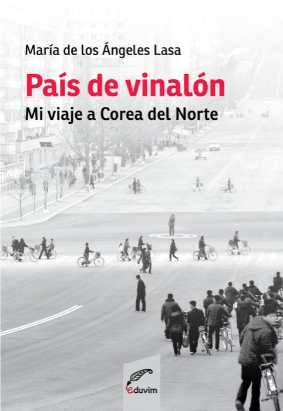

País de vinalón
Mi viaje a Corea del Norte
En marzo de 2018, una politóloga argentina y su madre viajan a Corea del Norte. De ese viaje improbable nace «País de vinalón», una crónica aguda que combina análisis político, observaciones incisivas y humor irreverente para adentrarse en el país más hermético del mundo.
¿Ya lo leíste? Contame qué te pareció en Goodreads.
marialasa.ar